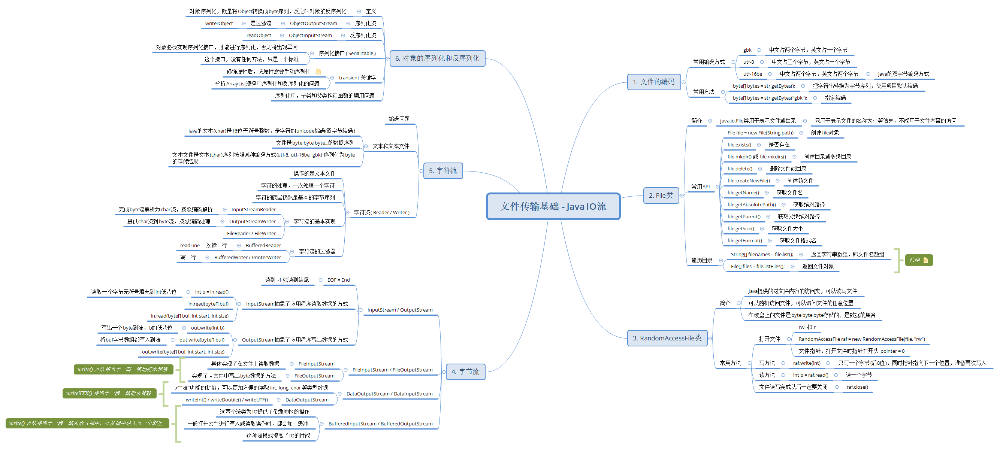
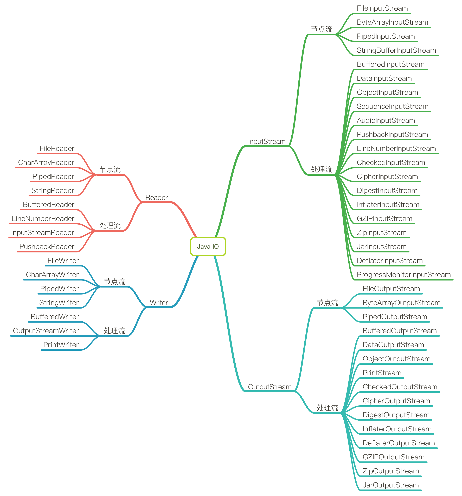
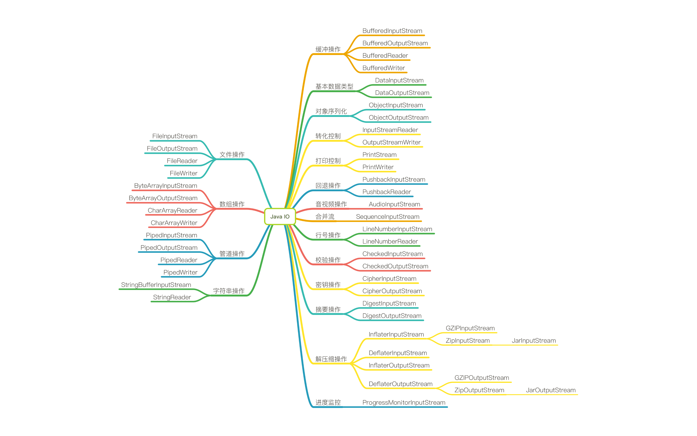

流的分类 
字节流和字符流
字节流 ：以字节为单位，每次次读入或读出是8位数据。可以读任何类型数据。字符流 ：以字符为单位，每次次读入或读出是16位数据。其只能读取字符类型数据。
输出流和输入流
输入流 ：从文件读入到内存。只能进行读操作。输出流 ：从内存读出到文件。只能进行写操作。
节点流和处理流
节点流 ：直接与数据源相连，读入或读出。处理流 ：与节点流一块使用，在节点流的基础上，再套接一层，套接在节点流上的就是处理流。处理流的构造方法总是要带一个其他的流对象做参数。一个流对象经过其他流的多次包装，称为流的链接。
注：输入输出流中的入和出，都是相对于系统内存而言的。为什么要有处理流？直接使用节点流，读写不方便，为了更快的读写文件，才有了处理流。
流按类型分类

流按用途分类

使用示例 节点流 FileReader 和 FileWriter1 2 3 4 5 6 7 8 9 10 11 12 13 14 15 16 17 18 19 20 21 22 23 24 25 26 27 28 29 30 31 32 33 34 35 36 37 38 39 40 41 42 43 44 45 46 47 48 49 50 51 52 53 54 55 56 57 58 59 60 61 62 63 64 65 66 67 68 69 70 71 72 73 74 75 76 77 78 79 80 81 82 83 84 85 86 87 88 public class ReaderAndWriterTest @Test public void reader () File file = new File("reader.txt" ); FileReader fr = null ; try { fr = new FileReader(file); int data; while ((data = fr.read()) != -1 ) { System.out.print((char ) data); } } catch (IOException e) { e.printStackTrace(); try { if (Objects.nonNull(fr)) { fr.close(); } } catch (IOException ex) { ex.printStackTrace(); } } } @Test public void reader2 () throws IOException File file = new File("reader.txt" ); FileReader fr = new FileReader(file); char [] chars = new char [5 ]; int len; while ((len = fr.read(chars)) != -1 ) { String str = new String(chars, 0 , len); System.out.println(str); } fr.close(); } @Test public void writer () throws IOException File file = new File("writer.txt" ); FileWriter fw = new FileWriter(file); fw.write("I have a dream!!!\n" ); fw.write("You need to have a dream!!!" ); fw.close(); } @Test public void readerAndWriter () throws IOException FileReader fr = new FileReader("reader.txt" ); FileWriter fw = new FileWriter("readerAndWriter.txt" ); char [] chars = new char [1024 ]; int len; while ((len = fr.read(chars)) != -1 ) { fw.write(chars, 0 , len); } fw.close(); fr.close(); } }
1 2 3 4 5 6 7 8 9 10 11 12 13 14 15 16 17 18 19 20 21 22 23 24 25 26 27 28 29 30 31 32 33 34 35 36 37 38 39 40 41 42 43 44 45 46 47 48 49 50 51 52 53 54 55 56 57 58 59 60 61 62 63 64 65 66 public class InputAndOutPutStreamTest @Test public void inputStream () throws IOException File file = new File("inputStream.txt" ); FileInputStream fis = new FileInputStream(file); byte [] bytes = new byte [1024 ]; int len; while ((len = fis.read(bytes)) != -1 ) { String str = new String(bytes, 0 , len); System.out.println(str); } fis.close(); } @Test public void inputStreamAndOutPutStream () throws IOException FileInputStream fis = new FileInputStream("io.png" ); FileOutputStream fos = new FileOutputStream("io2.png" ); byte [] bytes = new byte [1024 ]; int len; while ((len = fis.read(bytes)) != -1 ) { fos.write(bytes, 0 , len); } fos.close(); fis.close(); } private void copyFile (String srcPath, String destPath) throws IOException FileInputStream fis = new FileInputStream(srcPath); FileOutputStream fos = new FileOutputStream(destPath); byte [] bytes = new byte [1024 ]; int len; while ((len = fis.read(bytes)) != -1 ) { fos.write(bytes, 0 , len); } fos.close(); fis.close(); } @Test public void copyFileTest () throws IOException long start = System.currentTimeMillis(); copyFile("copyFile.png" , "copyFile2.png" ); long end = System.currentTimeMillis(); System.out.println(end - start); } }
ByteArrayOutputStream 1 2 3 4 5 6 7 8 9 10 11 12 13 14 15 16 17 18 19 20 21 22 23 24 public class ByteArrayOutputStreamTest @Test public void byteArrayStreamTest () ByteArrayOutputStream byteOut = new ByteArrayOutputStream(8 ); String str = "Hello World!" ; try { byteOut.write(str.getBytes()); } catch (IOException e) { System.out.println("写入字节数据出错!" ); } byte [] buf = byteOut.toByteArray(); for (byte b : buf) { System.out.print((char ) b); } } }
1 2 3 4 5 6 7 8 9 10 11 12 13 14 15 16 17 18 19 20 21 22 23 24 25 26 27 28 29 30 31 32 33 34 35 36 37 38 39 40 41 42 43 44 45 46 47 48 49 50 51 52 53 54 55 56 57 58 59 60 61 62 63 64 65 66 67 68 69 70 71 72 73 74 75 76 77 78 79 80 81 82 83 84 85 public class PipedStreamTest public static void main (String[] args) PipedSender sender = new PipedSender(new PipedOutputStream()); PipedReceiver receiver = new PipedReceiver(new PipedInputStream()); try { receiver.getPipedIn().connect(sender.getPipedOut()); sender.start(); receiver.start(); } catch (IOException e) { System.out.println("发送接收消息出错!" ); } } public static class PipedSender extends Thread private PipedOutputStream pipedOut; public PipedSender (PipedOutputStream pipedOut) this .pipedOut = pipedOut; } public PipedOutputStream getPipedOut () return pipedOut; } @Override public void run () String strInfo = "Hello World!" ; try { pipedOut.write(strInfo.getBytes()); pipedOut.close(); } catch (IOException e) { System.out.println("向管道中写入数据出错!" ); } } } public static class PipedReceiver extends Thread private PipedInputStream pipedIn; public PipedReceiver (PipedInputStream pipedIn) this .pipedIn = pipedIn; } public PipedInputStream getPipedIn () return pipedIn; } @Override public void run () byte [] buf = new byte [2048 ]; try { int len = pipedIn.read(buf); System.out.println(new String(buf, 0 , len)); pipedIn.close(); } catch (IOException e) { System.out.println("从管道中读取数据出错!" ); } } } }
处理流 1 2 3 4 5 6 7 8 9 10 11 12 13 14 15 16 17 18 19 20 21 22 23 24 25 26 27 28 29 30 31 32 33 34 35 36 37 38 39 40 41 42 43 44 45 46 47 48 49 50 51 52 53 54 55 56 57 58 59 60 61 62 63 64 65 66 67 68 69 70 71 72 73 74 75 76 77 78 public class BufferedTest @Test public void bufferedStreamTest () throws IOException BufferedInputStream bis = new BufferedInputStream(new FileInputStream("io.png" )); BufferedOutputStream bos = new BufferedOutputStream(new FileOutputStream("io3.png" )); byte [] bytes = new byte [1024 ]; int len; while ((len = bis.read(bytes)) != -1 ) { bos.write(bytes, 0 , len); } bos.close(); bis.close(); } private void bufferCopyFile (String srcPath, String destPath) throws IOException BufferedInputStream bis = new BufferedInputStream(new FileInputStream(srcPath)); BufferedOutputStream bos = new BufferedOutputStream(new FileOutputStream(destPath)); byte [] bytes = new byte [1024 ]; int len; while ((len = bis.read(bytes)) != -1 ) { bos.write(bytes, 0 , len); } bos.close(); bis.close(); } @Test public void bufferCopyFileTest () throws IOException long start = System.currentTimeMillis(); bufferCopyFile("copyFile.png" , "copyFile3.png" ); long end = System.currentTimeMillis(); System.out.println(end - start); } @Test public void bufferedReaderAndWriter () throws IOException BufferedReader br = new BufferedReader(new FileReader("readerAndWriter.txt" )); BufferedWriter bw = new BufferedWriter(new FileWriter("readerAndWriter2.txt" )); char [] chars = new char [1024 ]; int len; while ((len = br.read(chars)) != -1 ) { bw.write(chars, 0 , len); } bw.close(); br.close(); } @Test public void bufferedReaderAndWriter2 () throws IOException BufferedReader br = new BufferedReader(new FileReader("readerAndWriter.txt" )); BufferedWriter bw = new BufferedWriter(new FileWriter("readerAndWriter3.txt" )); String data; while ((data = br.readLine()) != null ) { bw.write(data); bw.newLine(); } bw.close(); br.close(); } }
1 2 3 4 5 6 7 8 9 10 11 12 13 14 15 16 17 18 19 20 21 22 23 24 25 26 27 28 29 30 public class InputStreamReaderTest @Test public void inputStreamReaderTest () throws IOException InputStreamReader isr = new InputStreamReader(new FileInputStream("inputStreamReader.txt" ), StandardCharsets.UTF_8); char [] chars = new char [1024 ]; int len; while ((len = isr.read(chars)) != -1 ) { String str = new String(chars, 0 , len); System.out.println(str); } } @Test public void inputStreamReaderAndOutputStreamWriterTest () throws IOException InputStreamReader isr = new InputStreamReader(new FileInputStream("inputStreamReader.txt" ), StandardCharsets.UTF_8); OutputStreamWriter osw = new OutputStreamWriter(new FileOutputStream("outputStreamReader.txt" ), "GBK" ); char [] chars = new char [1024 ]; int len; while ((len = isr.read(chars)) != -1 ) { osw.write(chars, 0 , len); } osw.close(); isr.close(); } }
遵循的设计原则
单一职责原则 ：每一个 IO 类的都具有单独的功能和职责，需要对某种类型的流做修改时，只需要修改具体对应的IO流类即可。里氏替换原则 ：子类完全实现了父类的方法，且有自己的个性，子类覆盖或实现父类的方法时输入参数和返回结果的范围没有变化。接口隔离原则 ：输入输出流所实现的接口有所不同，而且接口比较细化，接口中的方法少。依赖倒置原则 ：Java IO中的各个具体的功能类，都继承或聚合了 InputStream、OutputStream 的抽象类，都共同依赖了抽象，而不是依赖了某个具体的功能的 IO 类。开闭原则 ：当用户需要新增一种新特征、新方式的IO流时，可以直接新增一种类的流，让其继承或聚合 InputStream、OutputStream、FilterInputStream、FilterOutputStream 等类，从而来书写其特有的功能。聚合/组合复用原则 ：就比如 FileInputStream 中对 FileDescriptor 和 FileChannel 的使用，都是采用了聚合的方式，而非继承的方式，从而使类之间的耦合度降低，提高了灵活性。
使用到的设计模式 装饰器模式 由于 Java I/O 库需要很多性能的各种组合，如果这些性能都是用继承来实现，那么每一种组合都需要一个类，这样就会造成大量行重复的类出现。如果采用装饰模式，那么类的数目就会大大减少，性能的重复也可以减至最少。因此装饰模式是 Java I/O 库基本模式。装饰模式的引进，造成灵活性和复杂性的提高。因此在使用 Java IO 库时，必须理解 Java IO 库是由一些基本的原始流处理器和围绕它们的装饰流处理器所组成的。以字节输入流为例。InputStream 是需要被装饰的抽象构件，而其下的 FileInputStream、ByteArrayInputStream 等是被装饰的具体构件；FilterInputStream 是装饰器的父类，BufferedInputStream、DataInputStream 则是具体的装饰器类。
适配器模式 适配器模式是 Java IO 库中第二个重要的设计模式。如：StringBufferInputStream 就是一个适配器类。它继承了 InputStream 类型，同时持有一个对 String类型的引用。这是将 String 对象适配成 InputStream 类型的对象形式的适配器模式。PipedOutputStream 也是一个适配器类。PipedOutputStream 总是和 PipedInputStream 一起使用，它接收一个类型为 PipedInputStream 的输入类型，并将之转换成 OutputStream 类型的输出流，这是一个对象形式的适配器模式应用。
设计的优缺点 优点
功能全面、强大和灵活，同时还防止了过多的类膨胀
符合开闭原则，开发可以通过各种装配能实现各种功能
缺点
复杂难记，API使用繁琐。如：Jdk1.6 中，从文本文件中读取数据转换为字符串，就得至少10行代码。
IO 流中的绝大多数方法都有 IOException 的检查异常，导致开发人员不得不在各个使用到的地方捕捉或再抛出异常，代码繁琐，不符合当前的主流设计思路。
案例源码：https://github.com/V-Vincen/IO http://blinkfox.com/2018/11/05/hou-duan/java/java-io-zhi-shi-zheng-li/
If you like this blog or find it useful for you, you are welcome to comment on it. You are also welcome to share this blog, so that more people can participate in it. If the images used in the blog infringe your copyright, please contact the author to delete them. Thank you !